Designs
Generative line art for pen plotters. Every design runs in the browser and exports a layered SVG. Previews use the default settings on A4.
Curves
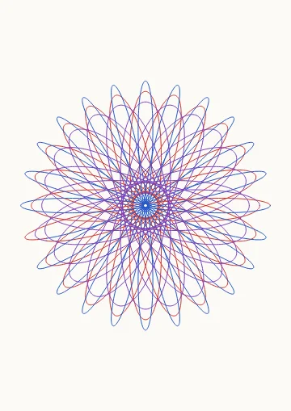
SpirographGears rolling inside or outside a ring, with nested pen-hole rings.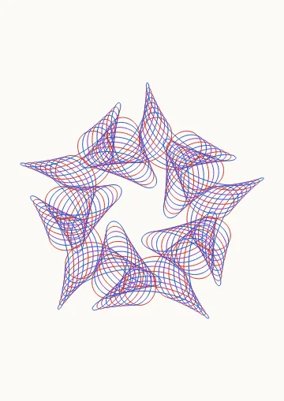
Mystery CurvesFrank Farris's wheels on wheels: sums of circular motions with exact rotational symmetry.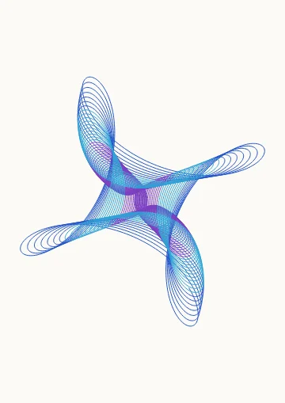
HarmonographDecaying pendulum swings near simple frequency ratios, drawn as one continuous line.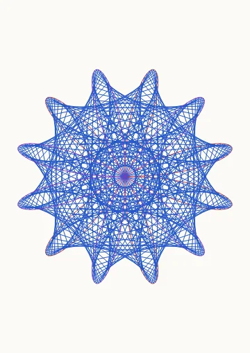
Maurer RoseStraight chords hopping around a rose curve in fixed angle steps.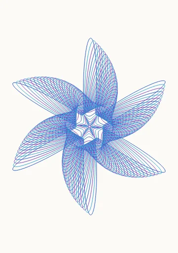
SuperformulaGielis's superformula: a stack of shapes morphing, shrinking and twisting inward.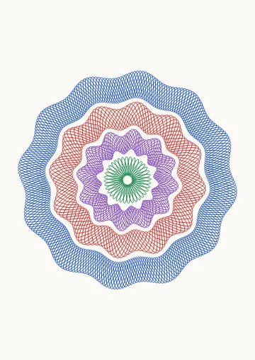
GuillochéBanknote-style rosette: bands of phase-shifted waves woven into a mesh.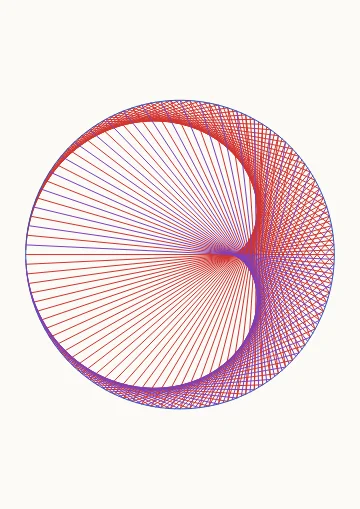
Times TableChords from i to i·k around a circle: cardioids, nephroids and their moiré.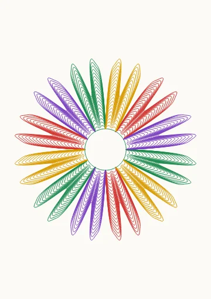
FlowerPetals filled with nested contour lines around a round center.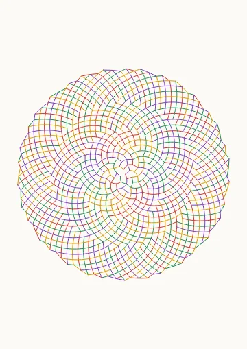
PhyllotaxisSunflower seed spirals: golden-angle dots and Fibonacci parastichies.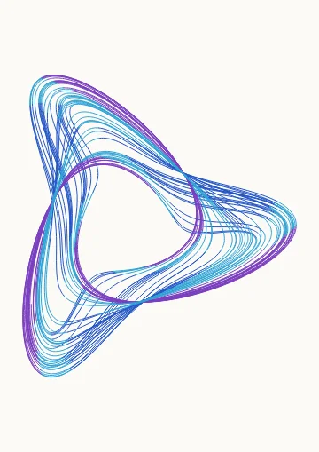
Strange AttractorA chaotic 3D flow (Lorenz, Aizawa, Thomas…) drawn as one continuous line.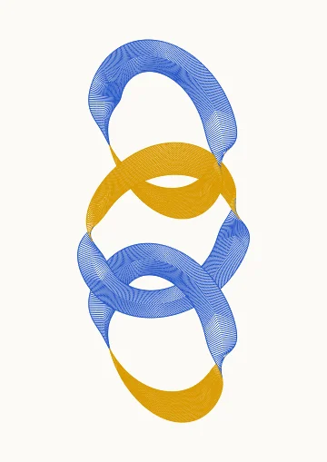
Ribbon SculptureLinked chains, Möbius bands, knots and a torus of interlocking rings, sculpted from ribbons of fine chevron ribs. The side of the band facing you picks the pen, so every twist and fold shows.Fields
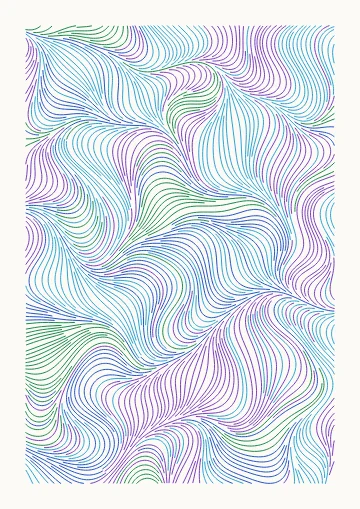
Flow FieldEvenly spaced streamlines through noise, curl, vortex or wave fields.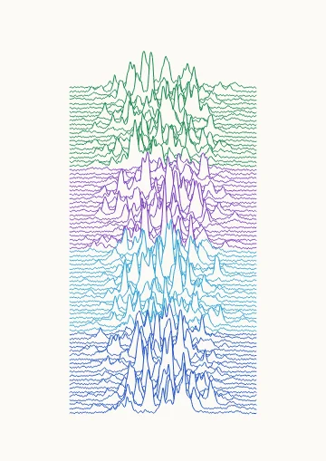
RidgelinesStacked noise profiles with hidden-line removal: pulsar plots, terrain and swells.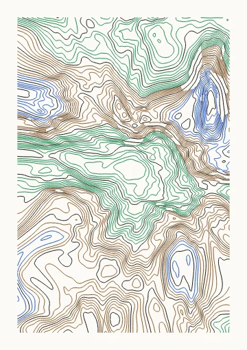
TopographicContour map of a domain-warped fractal landscape, with index contours on a second pen.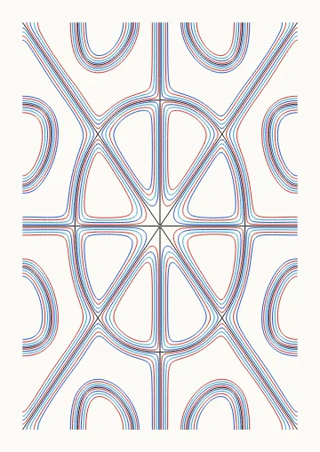
ChladniNodal lines of vibrating square and circular plates, with sand bands hugging them.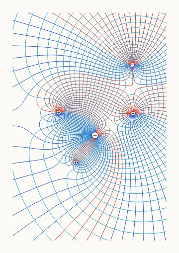
Field LinesElectric field lines and equipotentials of charges, or the magnetic field around wires.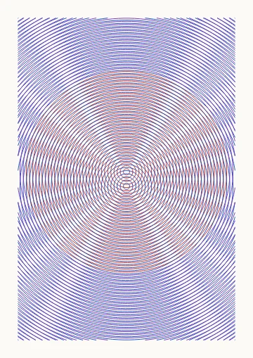
MoiréOverlaid circles, gratings, spirals or rays whose interference draws giant fringes.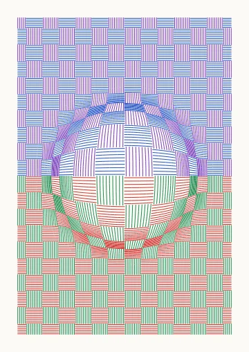
Op-Art WarpVasarely bulges: hatched checkerboards, grids and stripes swelling out of the page.Tiles
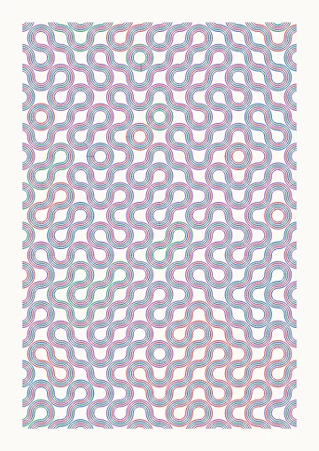
TruchetRandomly oriented tiles whose arcs, diagonals or triangles join into long meanders.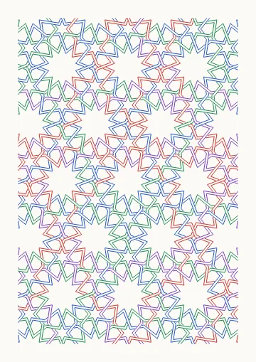
Islamic StarsHankin's polygons-in-contact star patterns over eight periodic tilings.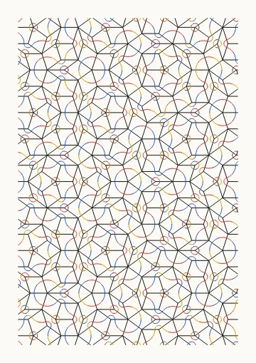
Penrose TilingAperiodic rhomb or kite-and-dart tilings with five-fold symmetry and matching arcs.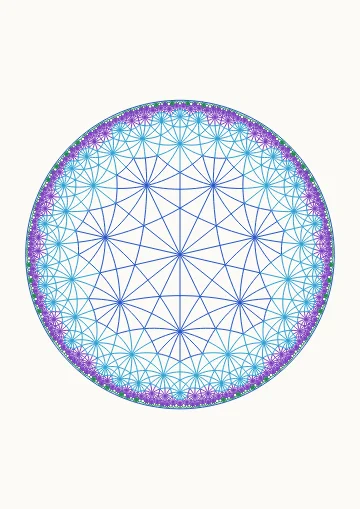
Hyperbolic TilingRegular {p, q} tilings of the Poincaré disk, in the manner of Escher's Circle Limit prints.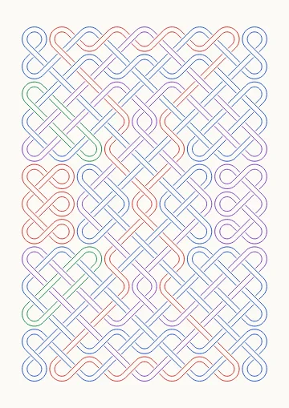
Celtic KnotInterlaced knotwork on a grid of dots, with breaks that turn the plait into panels and loops.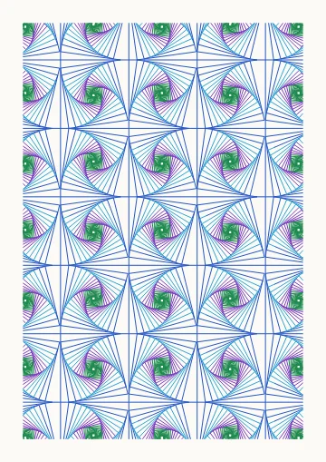
WhirlsPursuit polygons spiraling inwards, alone or tiled with alternating chirality.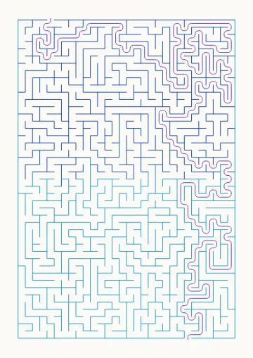
MazePerfect mazes on a grid or in concentric rings, with a separate color for the solution.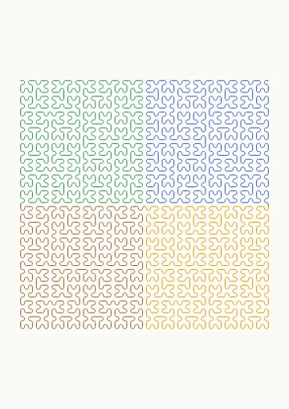
L-SystemSpace-filling curves, fractals and plants from string-rewriting turtle graphics.Packing
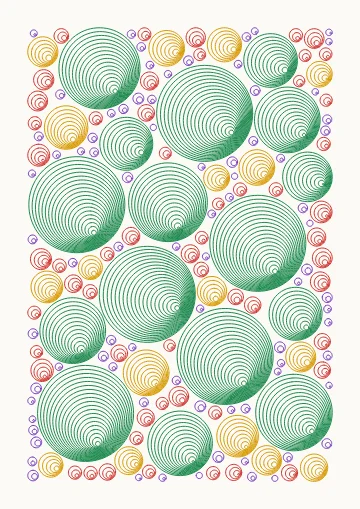
Circle PackingRandomly packed circles filled with rings, spirals, eccentric bubbles or hatching.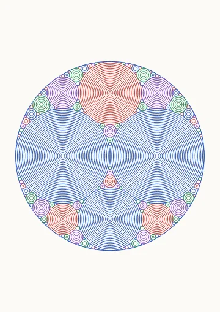
Apollonian GasketCircles packed into every gap between three tangent circles, forever (Descartes' theorem).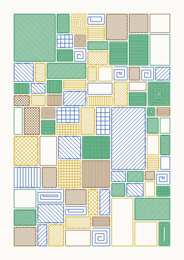
SubdivisionRecursive rectangle / triangle subdivision, each cell hatched, cross-hatched or nested at its own tone.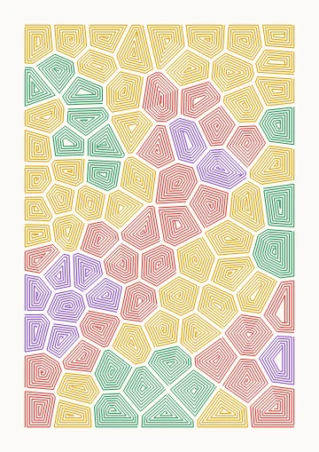
VoronoiRelaxed Voronoi cells filled with nested insets, hatching or outlines.